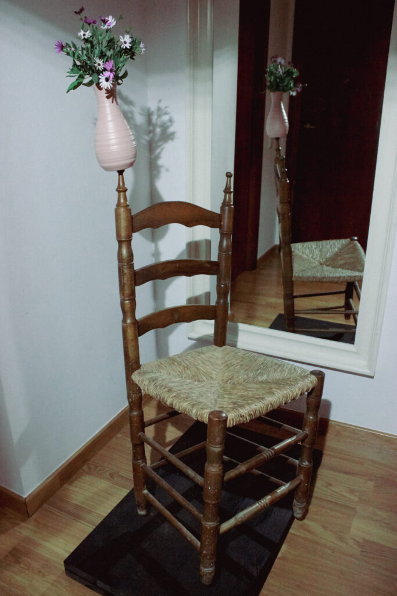
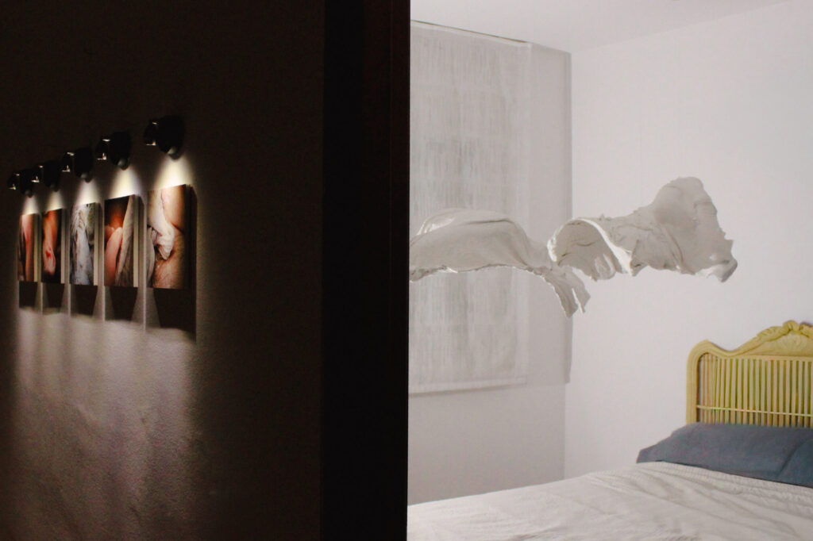

 Histéricas en revisión (2025) 01. HISTÉRICAS EN REVISIÓN: ARCHIVO CLÍNICO, A VIVA VOZ (2025) Apropiación fotográfica que cuestiona la representación histórica de la histeria en archivos clínicos. Medio: Apropiación fotográfica, 2025 > view full piece
 Non Restraint - No estás sola (2025) 02. NON RESTRAINT - "NO ESTÁS SOLA" (2025) Instalación interactiva que explora la solidaridad y la conexión entre los cuerpos en el espacio público. Medio: Instalación interactiva, 2025 > view full piece
In Memoriam (2026) 03. IN MEMORIAM (2026) Proyecto basado en el concepto de entrelazamiento cuántico: dos partículas entrelazadas donde el estado de una depende de la otra. Medio: Dossier conceptual y práctica escénica, 2026 > view full piece